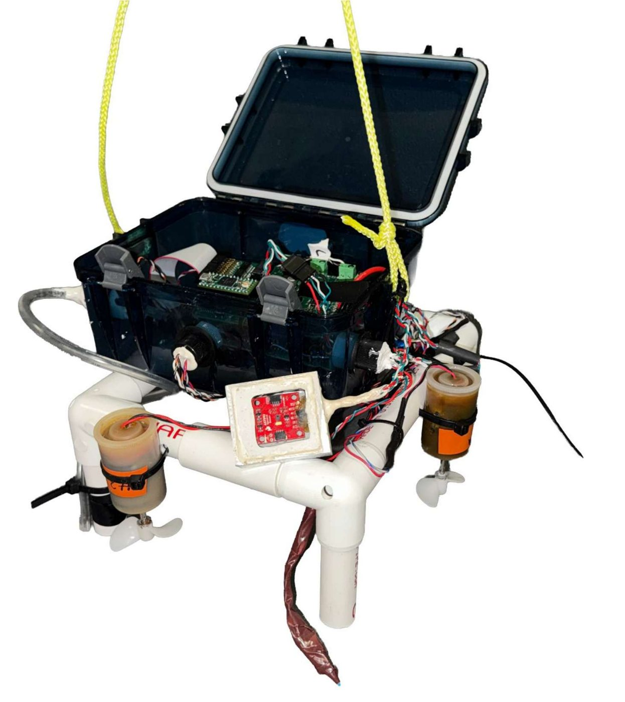
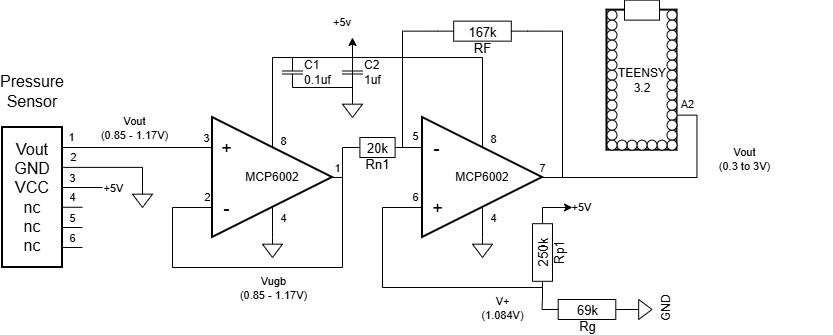
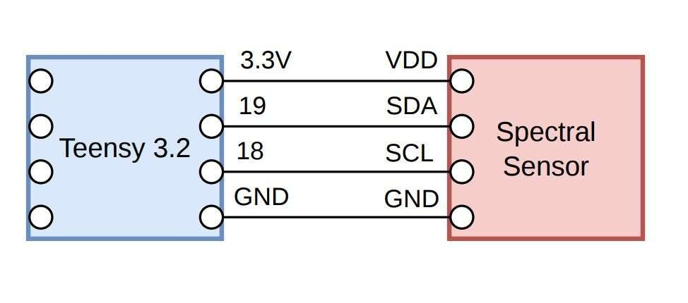
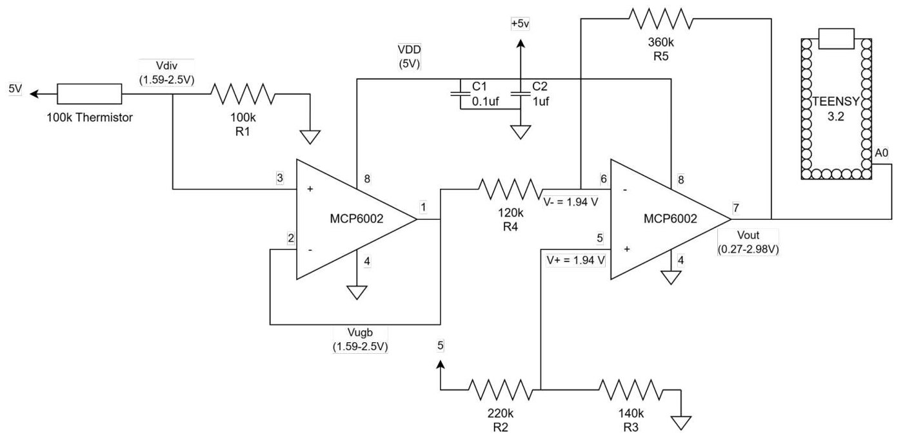
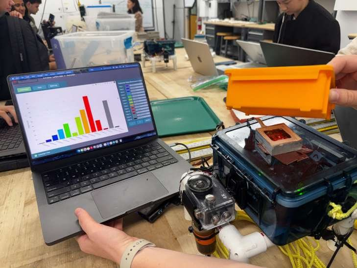
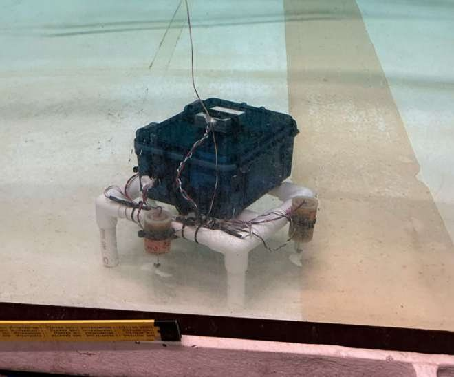
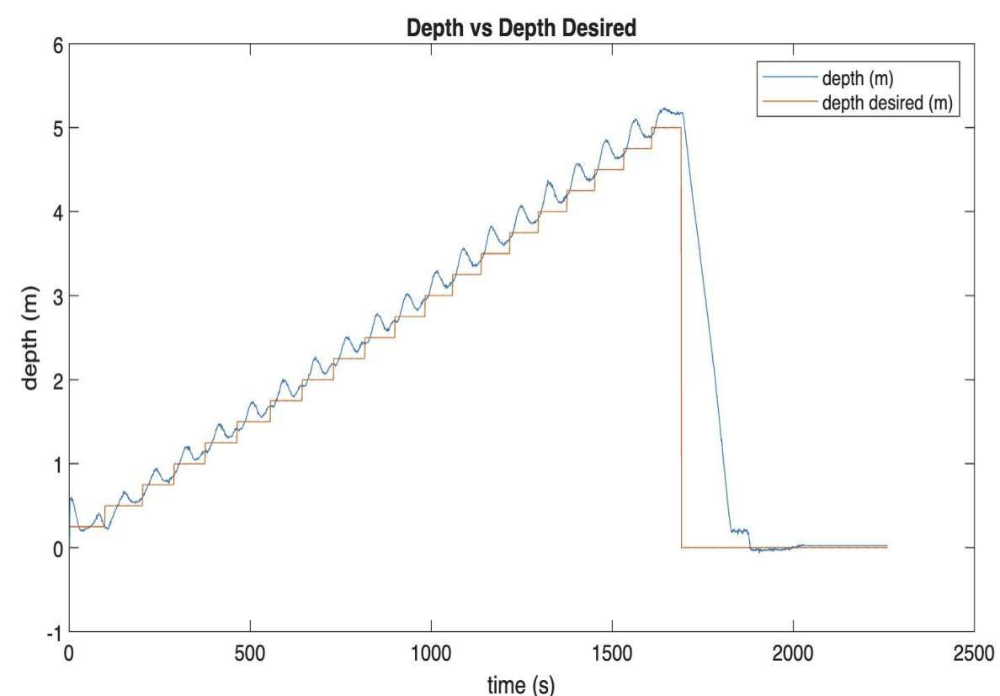
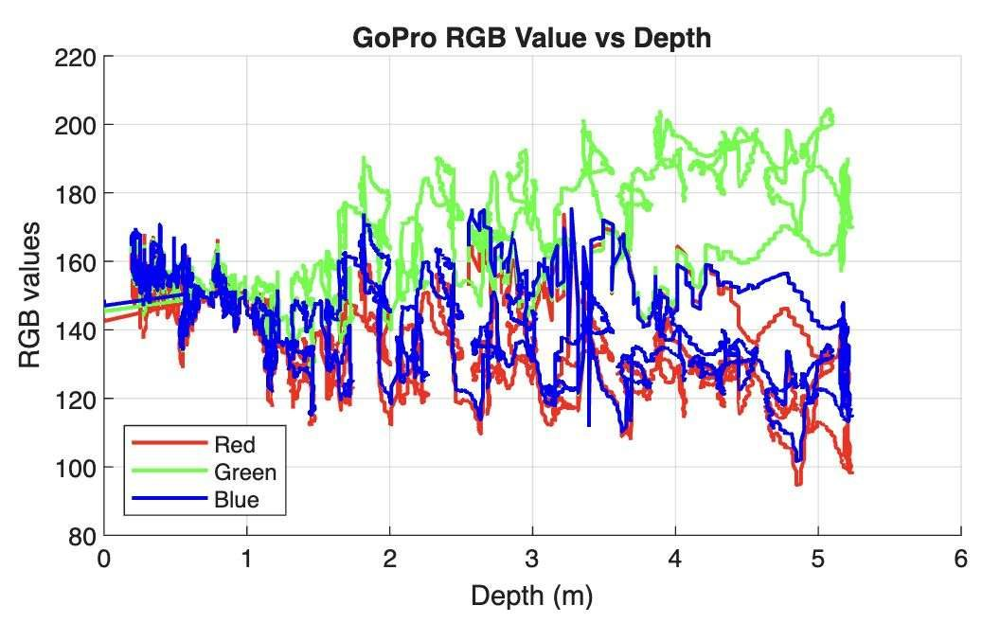
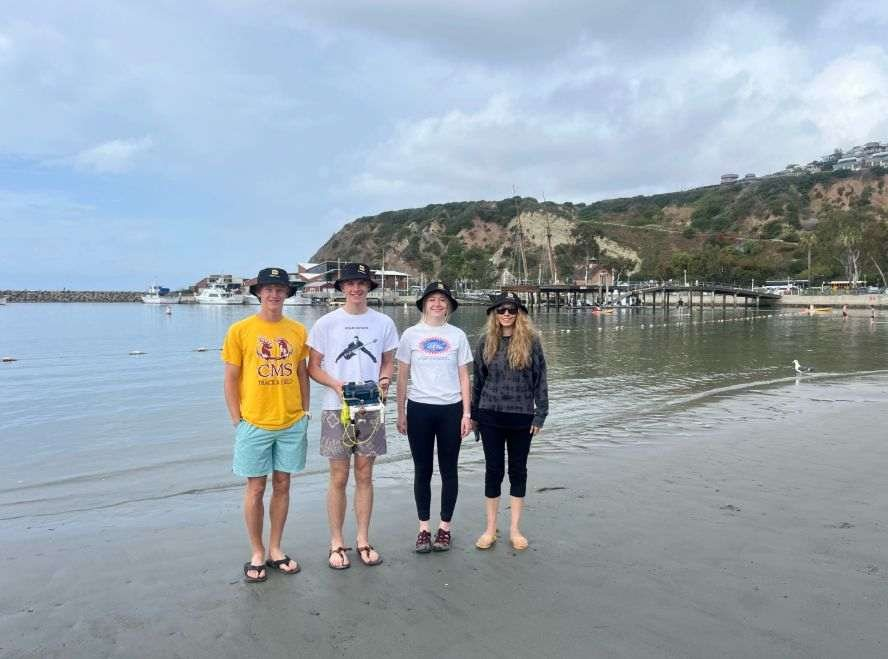

An autonomous underwater vehicle that dives to set depths and records the light spectrum at each one, to see how different wavelengths are absorbed or scattered by seawater.

Light fades as it travels through water, but not evenly: according to the Beer–Lambert law, every wavelength has its own attenuation coefficient. We wanted to measure that relation directly, in the ocean, by carrying a spectral sensor down through the water column and comparing what it saw at each depth.
Our goal mattered beyond the lab. Ocean temperature tracks global warming and habitat health, marine life relies on specific wavelengths to hunt and camouflage, and spectral data can hint at local plant life and pollution levels.



We calibrated the thermistor in known-temperature baths and the pressure sensor at known depths, then checked the spectral sensor against known colors before deployment. On site, a separate thermometer reading and depth checks while holding the robot at measured depths gave us ground truth.




